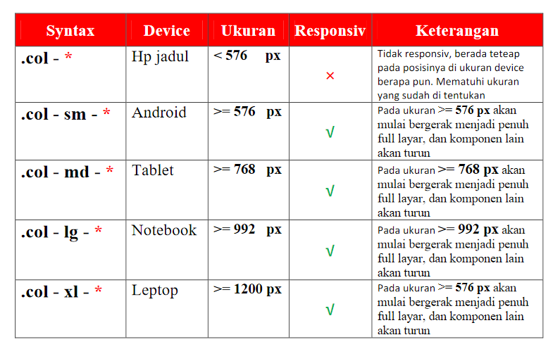

disini kita sudah memnggunakan bootstrap.di pertumuan kali ini
kita membahas tengtang container dan Grid
Container ada 2 Jenis yaitu :
- container
- container-fluid
* dimaksudkan Angka
di bawah ini Adalah beberapa contoh penggunaan GRID
di dalam botstap. grid ini sudah di dukug degan sistem
Responsiv.
Cara Penulisan : Harus menggunakan Class Row kenapa?
Grid bootstrap di susun berdasarkan flex, Class row berguna
agar komponen bisa di buat menyamping. seperti gambar di bawah ini.
pada umumnya grid bisa di jejer sebanyak 12 kotak